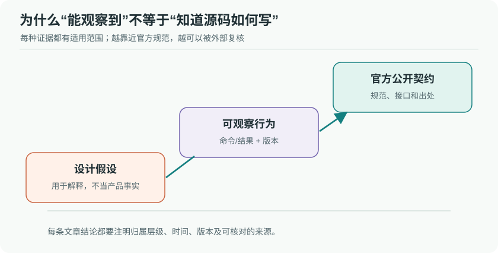
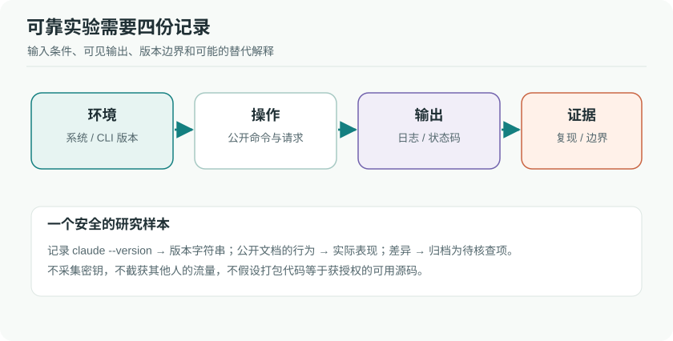

建立可靠的 Claude Code 研究环境
如何在不依赖未授权逆向或未经证实的内部源码前提下，安装工具、观察公开行为、记录证据，并让技术结论真正可复核。
核心问题：一个屏幕现象能证明什么
当 CLI 终端显示某次工具调用时，我们能够知道发生了什么输入与输出；但不必然知道程序内部具体调用了哪个私有函数、采用多少层队列或某个阈值是多少。把界面现象直接写成“源码实现”会使读者获得虚假的确定性。

本章建立的研究方法只使用公开文档、开发者自己有权访问的 CLI 工作区、明确授权的日志与公开 API 示例。
准备最小可复现环境
准备 Git、Python 3.10+（用于本课程的离线脚本）以及官方支持的 Claude Code 安装环境。Claude Code 安装命令与平台兼容性会随版本变化，请从官方 Setup 页面获取当前命令，不要执行来源不明的 shell 管道。
# 记录已有环境版本（不包含密钥）
git --version
python3 --version
claude --version
# 在独立测试目录里执行，不要在生产仓库上试验
mkdir -p agent-lab
cd agent-lab
git init在交互运行 Claude Code 前，阅读所用账户的计费、认证与权限提示。测试用仓库应是不含客户数据、私有凭证和生产部署密钥的空目录。
不要把安装验证变成安全漏洞
不向网页、聊天记录或测试报告粘贴 API Key，不关闭权限检查来“方便学习”，也不把生产目录挂载进陌生的 Agent 测试流程。
建立版本化研究记录
一次能够被别人检验的试验，至少说明：运行环境、公开操作、预期输出、实际输出以及结论适用的版本。还要写出替代解释：同样的输出是否可能来自不同内部实现？

# examples/observation-log.md（填写自己的实际结果）
## Environment
- OS:
- Claude CLI version:
- Date:
- Workspace: temporary empty Git repository
## Question
What public behavior is being tested?
## Steps
1. Record CLI version
2. Perform an approved, non-destructive operation
3. Capture only non-sensitive output
## Observation
[record actual output; no secrets]
## Interpretation
Supported claim:
Alternative explanation:
Unknown internal details:三条研究路径：官方文档、黑盒试验与自建实现
| 路径 | 回答什么 | 不能推出什么 |
|---|---|---|
| 官方文档与 SDK | 公开协议、参数、约束与支持方式 | 任一私有实现的全部细节 |
| 授权环境的行为观察 | 某版本在特定输入下的可见结果 | 唯一的代码结构或不变量 |
| 自行实现最小 Harness | 哪些设计足以产生相似行为 | 官方产品一定采用同样实现 |
“能通过 API 搭建一个类似系统”不等于“已恢复 Claude Code 原始源码”。此后章节把这三类内容分开叙述。
做一个无需模型调用的安全实验
先验证本仓库的本地浏览与静态资源路径，不需要付费 API，也不会执行自动代码修改：
git clone https://github.com/1998x-stack/claude-code-agent-tutorial.git
cd claude-code-agent-tutorial
python3 -m http.server 8000
# 浏览器打开 http://localhost:8000/site/另开终端执行 python3 tools/validate_site.py。输出是结构检查结果（链接、HTML、SVG），不是对 Claude Code 内部实现的测试。这是测试对象边界的第一课。
最容易出现的四类错误
- 版本错位：拿数月前的模型 ID、CLI 标志或权限模式解释最新文档。
- 把推测写成源码：根据一个外部行为推断固定内部变量或特定函数名称。
- 采样偏差：只保存成功的样例，没有记录失败、重试和特殊权限。
- 越界收集：未获得授权就抓取第三方账户日志、内部包或凭证。
研究记录模板的最低验收条件
同一个人换一台机器，按你的步骤能够验证公开行为或明确定位差异；无法复现时，将结论降级为假设而不是添加“内部可能”之类的定论。
练习：把一句断言改写成可证伪问题
你现在具备了贯穿全书的研究边界。下一章开始用公开 Messages API 构建一个我们可以完整查看源码的最小 Agent Loop。
参考资料与证据边界
- Claude Code 官方安装与配置说明 — 安装、认证和不同环境要求以官方步骤为准
- Claude Code 设置与权限 — 配置层级与权限的官方说明
- Claude Platform Tool Use — 公开可核查的工具调用接口
- GitHub Pages Actions 文档 — 静态技术文档的发布与验证
本文将公开接口和公开行为视为可核查证据；凡涉及自建 Harness 的结构与代码，均是教学设计，并非 Claude Code 私有源码的逐行还原。